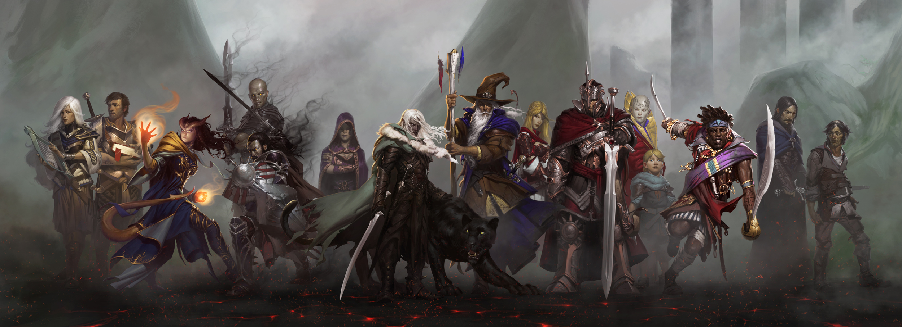

Introdução ao RPG de Mesa Dungeons & Dragons
O que é Dungeons & Dragons?
Dungeons & Dragons (abreviado como D&D ou DnD) é um jogo de interpretação de papéis de alta fantasia criado por Gary Gygax e Dave Arneson, e publicado pela primeira vez em 1974 nos Estados Unidos pela TSR, Inc., uma empresa fundada por Gygax e Don Kay em 1973. Atualmente na sua 5ª edição, o jogo é publicado nos Estados Unidos pela Wizards of the Coast (uma subsidiária da Hasbro), e no Brasil pela Galápagos Jogos. O jogo surgiu de uma variação do WarGame de miniaturas "Chainmail", de 1971, de onde herdou o seu sistema inicial de regras. A publicação do D&D é considerada como a origem dos RPGs modernos e o início da indústria de RPGs, e profundamente influenciou varios jogos, principalmente RPGs eletrônicos.
Jogadores de D&D criam personagens que embarcam em aventuras imaginárias em que eles enfrentam monstros, reúnem tesouros, interagem entre si e ganham pontos de experiência para se tornarem incrivelmente poderosos à medida que o jogo avança. O D&D se destaca dos wargames tradicionais por permitir que cada jogador controle um personagem específico, ao invés de um exército. Miniaturas ou marcadores em um tabuleiro quadriculado são usados ocasionalmente para representar esses personagens. O D&D também apresentou o conceito de Mestre de Jogo (Dungeon Master ou DM, no original), que atua como juiz e narrador e é responsável por manter o cenário ficcional do jogo e aplicar as regras a cada situação descrita.
Como funciona o jogo?
Cada jogador controla (tipicamente) um único personagem. Durante o curso do jogo, cada jogador dirige as ações de seu personagem e suas interações com outros personagens. Uma partida geralmente dura várias sessões, que são chamadas de aventuras, e um conjunto de aventuras relacionadas entre si é chamada de campanha.
Os resultados das escolhas de cada personagem, do grupo e eventos da história da campanha são determinados pelo Dungeon Master (DM), de acordo com as regras e com a interpretação do DM sobre essas regras. O DM cria, escolhe e descreve os vários NPCs (personagens que não são jogadores) que os personagens encontram, o cenário em que essas relações ocorrem, e os resultados de cada encontro, baseados nas escolhas e ações dos jogadores. As extensas regras do jogo, que cobrem áreas diversas como interações sociais, uso de magia, combate e o efeito do ambiente nos personagens, ajudam o mestre em suas decisões. O DM pode escolher quais regras publicadas ele vai usar, e até mesmo criar regras novas (conhecidas como homebrews) se achar necessário.
Desde o AD&D (Advanced Dungeons & Dragons, uma versão "avançadas" que existiu nos anos 1980-90), Dungeons & Dragons tem suas regras básicas divididas em três livros principais: O Livro do Jogador, o Livro do Mestre, e o Livro dos Monstros. Os únicos materiais necessários para jogar são os livros de regras, uma ficha de personagem para cada jogador e alguns dados poliédricos. A quarta edição assume o uso de miniaturas ou marcadores sobre uma superfície quadriculada, itens que eram opcionais nas edições passadas, e voltou a ser opcional na quinta edição. Muitos outros itens estão disponíveis para melhorar o jogo, alguns dos mais populares, embora opcionais sejam livros de expansão de regras, aventuras prontas e cenários de campanha.
O que eu devo fazer para começar a jogar?
Antes de começar o jogo é sempre importante entrar em contato com o GM, já que cada aventura e campanha possuem suas próprias regras, foco (como por exemplo, uma campanha mais focada na história e exploração, ou uma campanha feita para desafiar os jogadores, e mais focada em combates), história, etc. GMs costumam ser veteranos do jogo, então em sua grande maioria ficarão felizes em explicar todos os aspectos do jogo.
Depois disso é uma boa idéia começar a pensar no seu personagem. Você pode utilizar personagens prontos, que são feitos para jogadores novos aprenderem o ritmo do jogo, como interpretar, etc., sem a preocupação de criar um personagem único, ou você pode criar o seu próprio.
Mas e como eu crio o meu próprio personagem?
Criar um personagem é algo que no começo parece uma tarefa intimidadora, mas que se torna um processo muito gratificante com um pouco de prática e criatividade. Um personagem é composto por quatro partes principais:
- Classe - A "profissão" do Personagem
- Raça - A ancestralidade do Personagem
- Background - Um resumo geral do passado do Personagem
- Backstory - Define a história, características físicas, personalidade, etc. do Personagem
Você pode começar o processo de criação por qualquer uma dessas partes, mas é recomendado sempre começar pelo Backstory, e basear o resto deles em cima do que você definiu nele. Não é necessário definir toda a vida dele desde o momento do seu nascimento, somente as partes mais relevantes, a sua personalidade, objetivos e valores. Comece pequeno, forme uma base sólida e expanda o resto da história mais tarde (se desejar/for necessário).
Após definir o seu Backstory, é a hora de definir a sua Classe, Raça e Background.
Sua Classe irá definir aquilo que o seu personagem é capaz de realizar dentro do mundo do jogo. Um Guerreiro terá maestria em várias armas, um Bruxo terá acesso a um repertório imenso de magias, um clérigo poderá fornecer conhecimento e cura aos seus aliados, etc.
Antes de escolher a sua, pesquise todas as suas características, e tente balancear o que você deseja fazer durante a campanha com o que você já definiu no seu Backstory.
Sua Raça fornece ao Personagem um conjunto básico de vantagens e habilidades especiais, além de alguns aspectos, comportamentos e certos esteriótipos. Como exemplo, Elfos são vistos como orgulhoso, Halflings costumam ser pacíficos e hospitaleiros e Humanos são variados e extremamente adaptativos. Quando for escolher a sua, assim como sua classe, pesquise suas características, e se necessário modifique o seu Backstory para incluir estes aspectos.
Finalmente, você irá decidir o seu Background. Semelhante ao seu Backstory, seu Background define o seu passado, personalidade, alinhamento, conhecimento e motivação. Enquanto o Backstory é único para o seu personagem, vários personagens podem possuir o mesmo Background, embora em diferentes contextos. Como os outros, pesquise antes de decidir o seu, e especialmente consulte e modifique seu Backstory para que ele inclua o seu Background.
Esse site contém mais detalhes quanto a Classes, Raças e Background. Volte ao topo e selecione um dos links para saber mais. Muito obrigado pela sua atenção, e lembre-se da parte mais importante de qualquer campanha: Divirta-se!